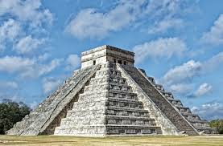
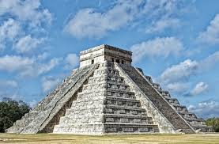
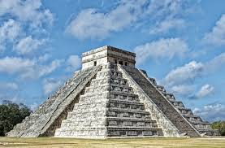

Founding and Early Development: Chichen Itza was a major city of the Maya civilization, believed to have been founded around 600 AD. It developed as a significant political, economic, and religious center from approximately 600 AD to 1200 AD. Cultural Influence: The site shows influences from both the Maya and Toltec civilizations. Around the 10th century, Toltec warriors from Central Mexico invaded the Yucatán Peninsula, which led to a fusion of Mayan and Toltec cultures. This is evident in the site's architecture, which features both Maya and Toltec elements. Decline: Chichen Itza began to decline around 1200 AD, likely due to internal conflict, drought, or trade route changes. By the time the Spanish arrived in the early 16th century, it was no longer a dominant power but remained a pilgrimage site. Rediscovery: Chichen Itza was rediscovered by explorers in the 19th century, and significant archaeological excavations and restorations have taken place since then.
